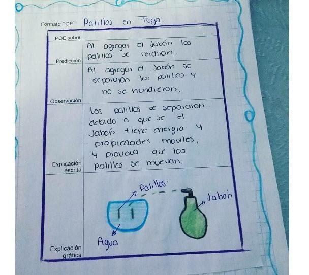

Unidad 2
Simuladores - POE

Otros simuladores
Objetivo
Conocer otras plataformas además de Phet Colorado por medio de la búsqueda y contextualización de actividades POE para la presentación de estos al grupo curso.
- ¿Qué es POE?
- ¿Qué características tiene?
- ¿Qué momentos propone el POE?
- ¿Qué busca la estrategia POE en el proceso de enseñanza-aprendizaje del aprendiz?
- ¿Cómo se relaciona el POE con el constructivismo?
- ¿y con el cambio conceptual?

Desafío 1. Completen una slides del gslides "Repositorio Educativo POE" en ucursos.
En el título
- Nombre del simulador con su respectivo hipervínculo
- Código (Asignatura, curso y OA)
En las notas del orador:
- Limitaciones encontradas
- Nombres del equipo
En el cuerpo
Preguntas a realizar en cada una de las fases- Preguntas de la predicción
- Preguntas de la observación
- Preguntas de la explicación
Presentaciones Blitz: El que no presentó en el bloque anterior presentará en 2min el POE escogido explicando como sus preguntas generan el cambio conceptual
Repositorio educativo: POE